Project type:
Container Texturing project in Maya and Photoshop.
Project description:
For this project I created rocks in Mudbox and Maya to learn 3D digital sculpting and modeling tools. I sculpted the shape of the rock to be similar to a Minecraft obsidian block.
The main objective is to get more comfortable with digital sculpting and painting. The second objective is to learn to move between modeled (Maya) and sculpted (Mudbox) assets.
To learn these techniques I created 2 rocks. One rock was sculpted and painted completely in Mudbox, which is this Obsidian rock. The second rock was created in Maya as a low polygon rock. I exported this rock to Mudbox for detailed sculpting. I learnt how to export out Normal Maps from Mudbox so that my high polygon sculpts can be use on my low polygon rock.
Date:
January 27 - February 9 2025
Role:
3D Sculptor.
Project highlight:
Renders from different angles:
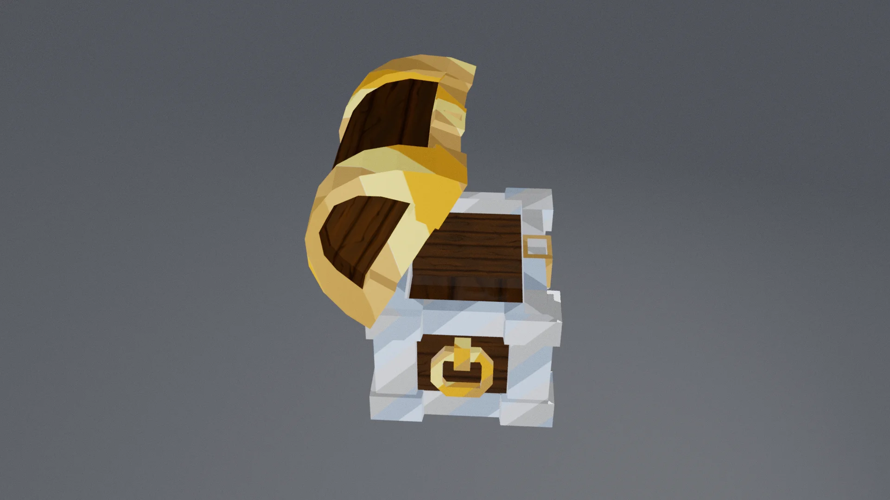
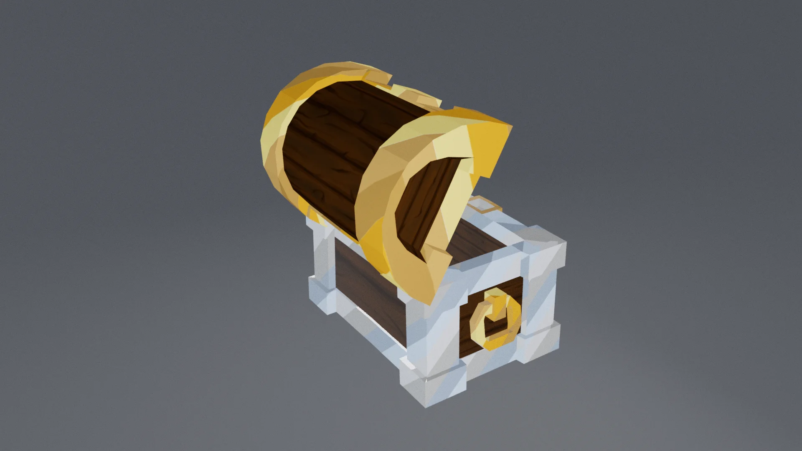
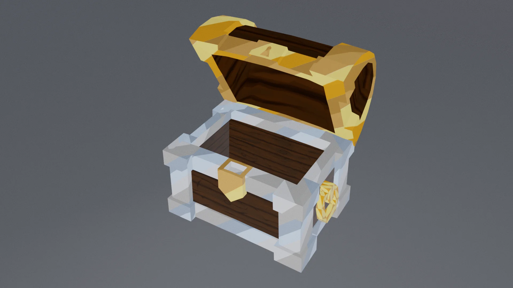
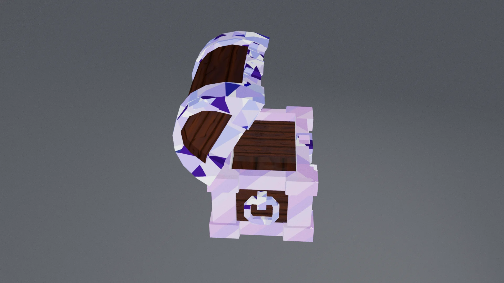
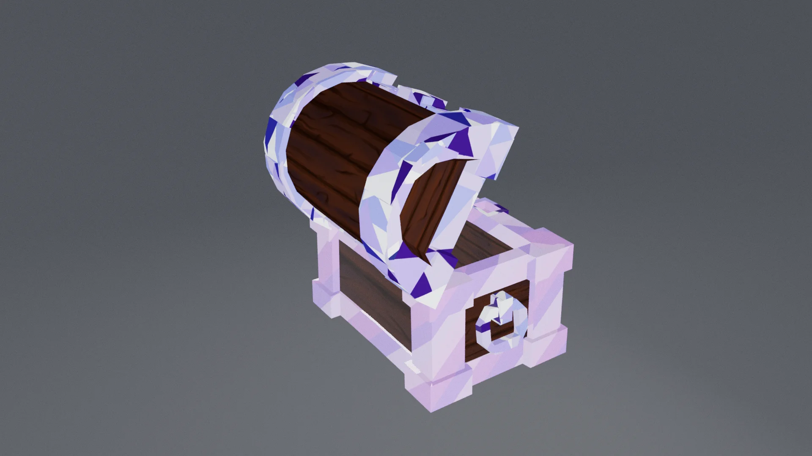
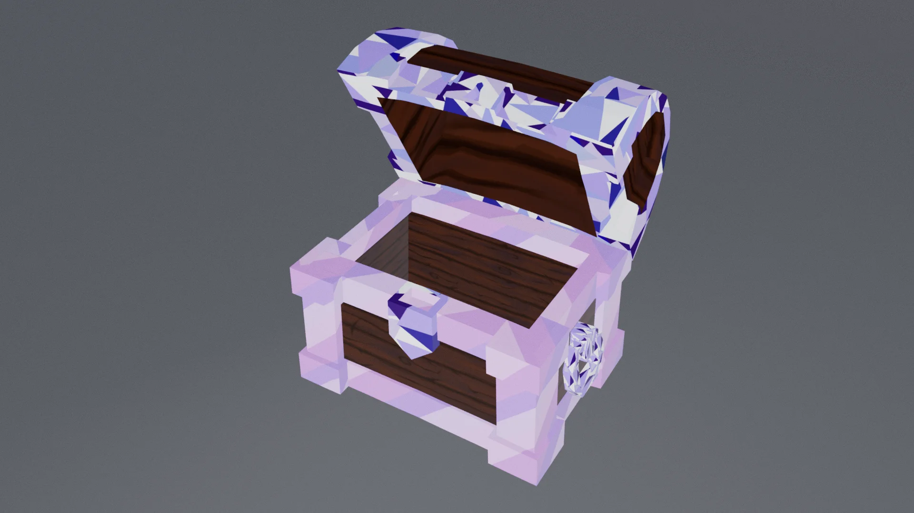
Textures:
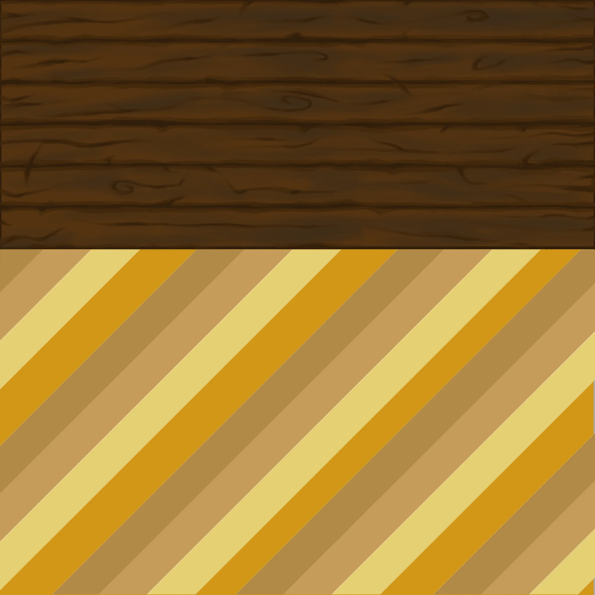
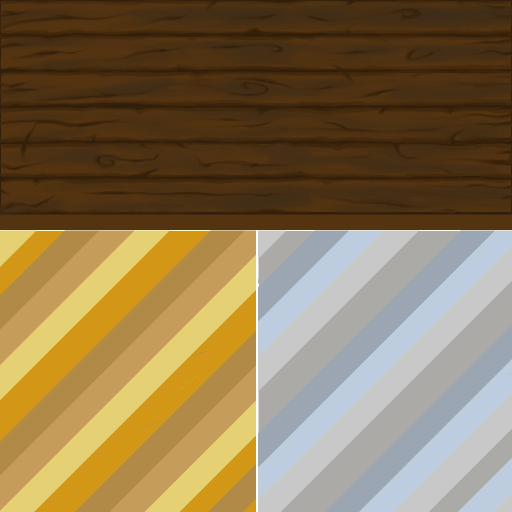
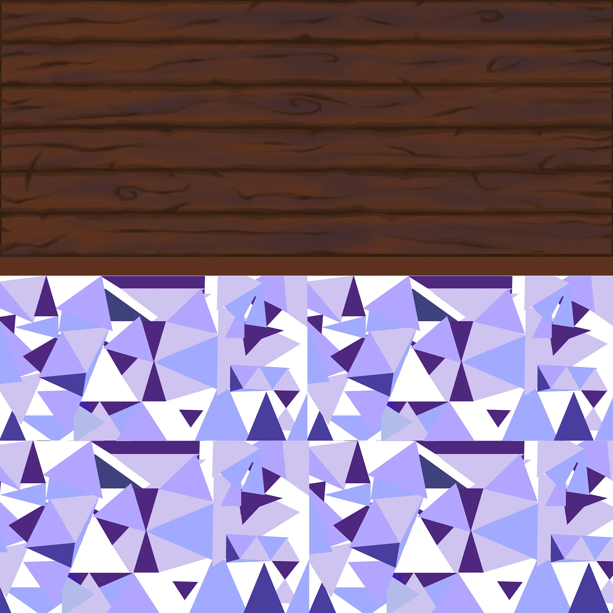
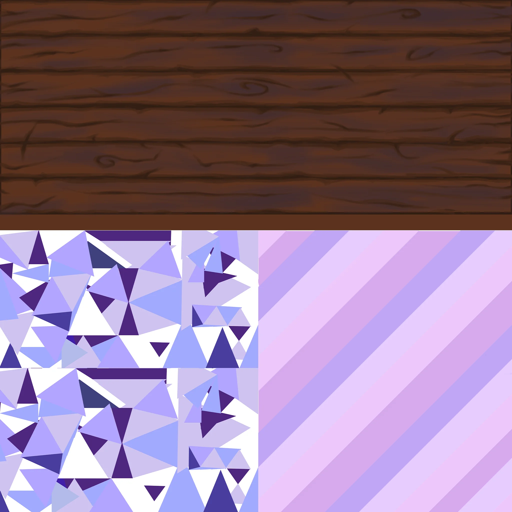
UV:
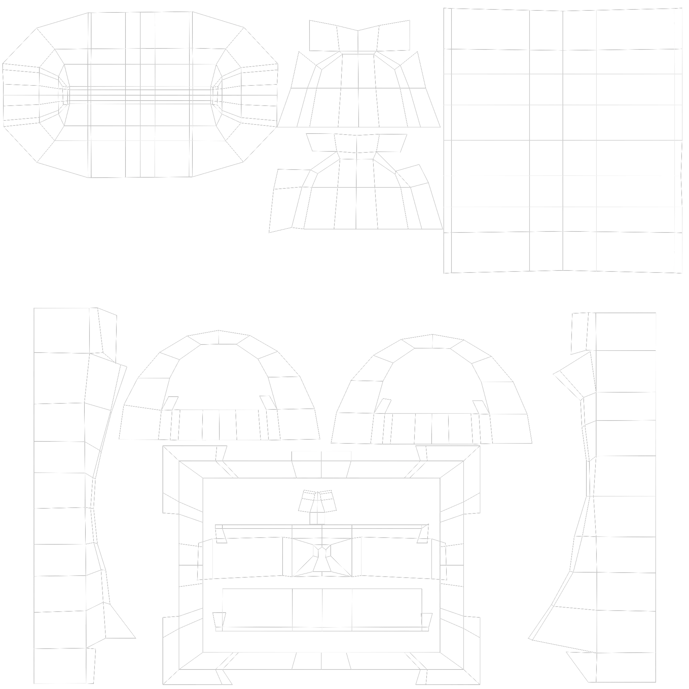
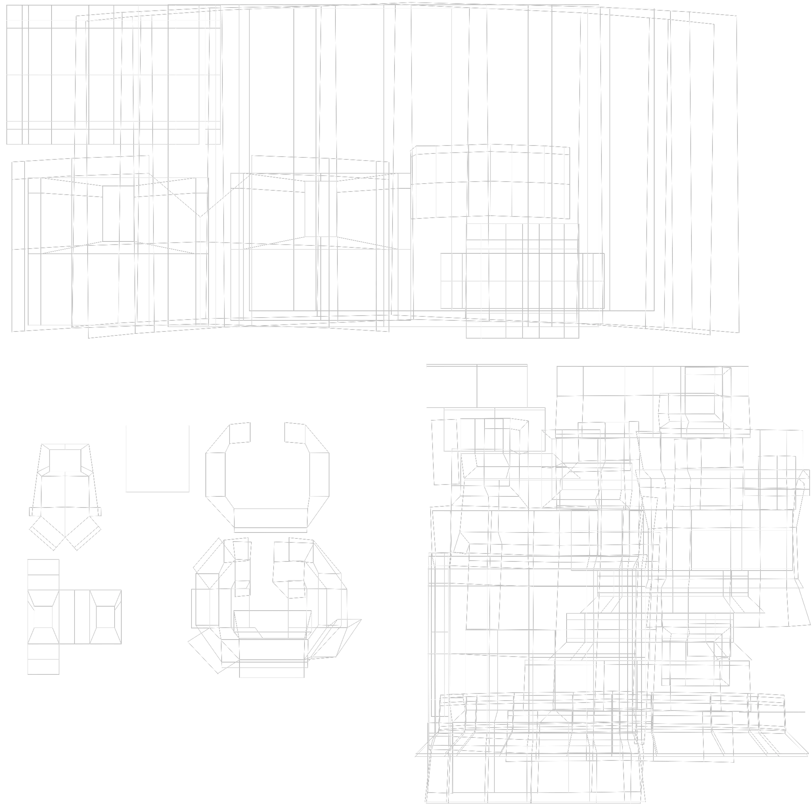
Reference:
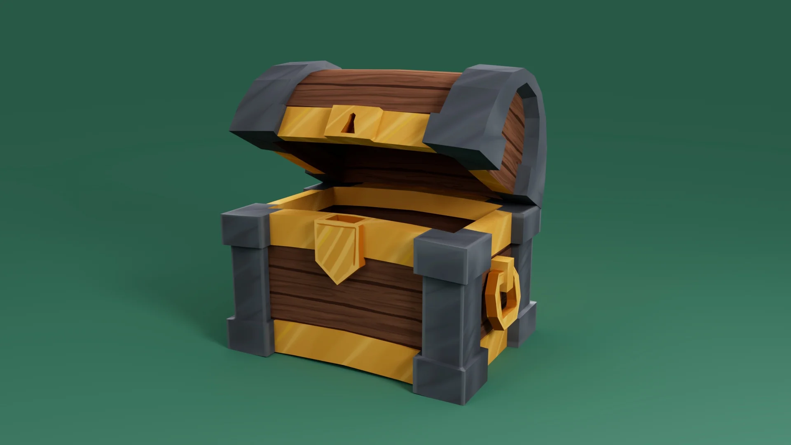

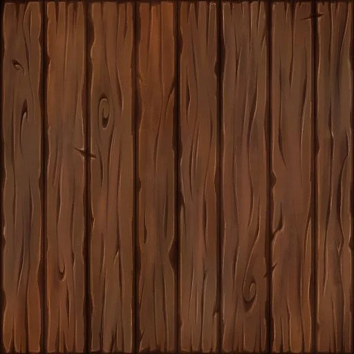
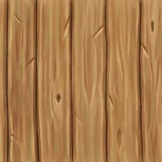
Reflection:
This project helps me learnt how to use sculpting and painting tools in Mudbox. It takes a lot of intention to details to make the rock looks organic and like I intended.
I found it challenging to make the details of the obsidian stand out because the rock is dark.